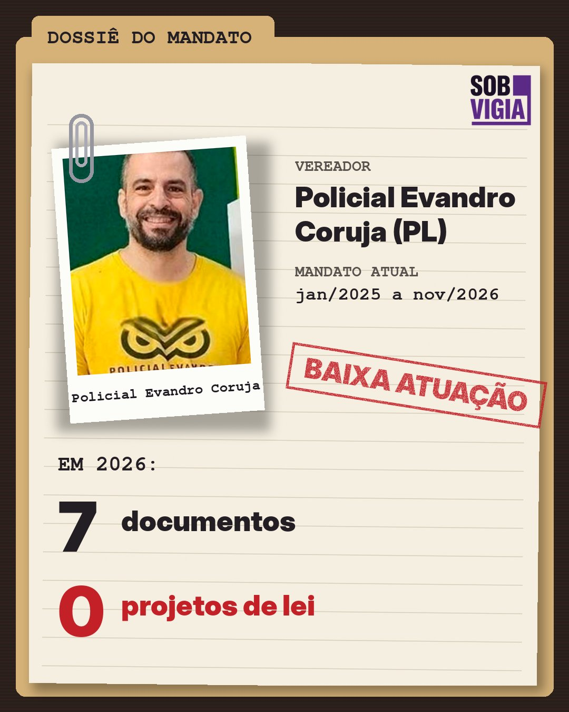

Gravataí · Câmara
Dossiê do mandato: 7 documentos em 2026, nenhum projeto de lei. A atuação do bolsonarista Evandro Coruja na Câmara
No mandato atual, que começou em janeiro de 2025, o vereador do PL apresentou só três projetos de lei, nenhum deles em 2026. O principal repete uma lei federal e proíbe a linguagem neutra. Em 2026, ano em que foi candidato a deputado estadual, assinou moções, um título de cidadão, um parecer e um requerimento.
Redação
27 DE NOV DE 2026, 17:05
Dossiê do mandato é um quadro do Sob Vigia que avalia o trabalho de cada vereador de Gravataí no mandato atual, que começou em 1º de janeiro de 2025 e vai até 2028. Esta edição cobre o período de janeiro de 2025 a novembro de 2026, com base nos projetos, documentos e votações registrados no site da Câmara Municipal.
O vereador Policial Evandro Coruja (PL) está no segundo mandato na Câmara de Gravataí. Policial federal e ex-segurança de Jair Bolsonaro, ele é apresentado pelo portal Seguinte como o representante do "bolsonarismo-raiz" em Gravataí. Em 2026, foi candidato a deputado estadual pelo PL, por indicação do senador Flávio Bolsonaro, segundo o próprio vereador. Fez 12.755 votos no estado e ficou como suplente.
Na Câmara, o saldo do mandato atual é curto. Em quase dois anos, Coruja apresentou três projetos de lei. O último foi protocolado em novembro de 2025. Em 2026, até o fim de novembro, nenhum.
Entre os que menos propõem
No mesmo período, de janeiro de 2025 a novembro de 2026, o vereador típico de Gravataí apresentou 12 projetos de lei. Os três mais ativos apresentaram 29 ou mais. Coruja está entre os cinco vereadores que menos apresentaram projetos no mandato.
| Projetos de lei apresentados (jan/2025 a nov/2026) | Quantidade |
|---|---|
| Vereador mais ativo | 40 |
| Vereador típico da Câmara (mediana) | 12 |
| Policial Evandro Coruja (PL) | 3 |
Apresentar muitos projetos não é, sozinho, sinal de bom trabalho: há vereadores que inflam os números com homenagens e nomes de rua. Por isso, o Sob Vigia olhou também para o conteúdo do que foi proposto.
Os três projetos do mandato
| Projeto | Data | O que faz | Situação |
|---|---|---|---|
| PL 81/2025 | jul/2025 | Dá nome a uma rua | Aprovado |
| PL 99/2025 | ago/2025 | Declara o Rotary Club de Gravataí de utilidade pública | Retirado pelo autor |
| PL 139/2025 | nov/2025 | Cria a Política Municipal de Linguagem Simples e proíbe a linguagem neutra | Aprovado |
Dois dos três são simbólicos. O nome de rua não muda a vida de ninguém, e o título de utilidade pública para um clube de serviço foi retirado pelo próprio vereador antes da votação.
O projeto que chegou um dia depois da lei federal
O terceiro projeto, a Política Municipal de Linguagem Simples, é o único com conteúdo. A ideia, em si, é boa: obrigar a prefeitura a escrever documentos, formulários e comunicados de forma clara, com frases curtas e sem jargão, para que quem tem menos escolaridade entenda seus direitos.
Mas o tema já estava resolvido. Em 17 de novembro de 2025, foi publicada a Lei federal nº 15.263, que criou a Política Nacional de Linguagem Simples e vale para a administração pública da União, dos estados e dos municípios. Evandro Coruja protocolou o projeto municipal no dia seguinte, 18 de novembro, com a mesma estrutura de objetivos, princípios e técnicas de redação.
O projeto também traz uma proibição. O artigo 4º manda a administração "não usar novas formas de flexão de gênero e de número das palavras da língua portuguesa", ou seja, proíbe a linguagem neutra, como "todes" e "elu", nas comunicações da prefeitura e da Câmara. A regra repete a da lei federal.
Na prática, o único projeto de conteúdo do vereador no mandato repete uma lei que já valia em Gravataí, incluindo a restrição à linguagem neutra, uma pauta de costumes que mira pessoas não binárias e a comunidade LGBT+ e não muda em nada o atendimento à população. O Supremo Tribunal Federal já derrubou diversas leis municipais que proibiam a linguagem neutra nas escolas, por invadirem a competência da União.
2026: homenagens, moções e nenhum projeto de lei
Em 2026, segundo o site da Câmara, o vereador é autor de sete documentos. Nenhum é projeto de lei:
| Documento | O que é |
|---|---|
| Moção 13/2026 | Parabeniza dois atletas de jiu-jítsu de uma academia de Gravataí |
| Requerimento 178/2026 | Pede para participar da Frente Parlamentar para Enfrentamento ao Feminicídio |
| Parecer 3/2026 | Parecer contrário ao PL 32/2026, que declarava de utilidade pública um centro espiritual |
| Projeto de Decreto Legislativo 7/2026 | Concede título de Cidadão Gravataiense |
| Moção 77/2026 | Parabeniza três atletas pelo Campeonato Brasileiro de Jiu-Jítsu |
| Moção 117/2026 | Moção de pesar por um falecimento |
| Moção 153/2026 | Parabeniza um soldado da Brigada Militar |
Moções e títulos são manifestações e homenagens, sem efeito de lei. Em quase onze meses, a atuação registrada do vereador se resume a cumprimentos, um título honorário, um pedido para integrar uma frente parlamentar e um parecer. Foi também o ano em que ele fez campanha para a Assembleia Legislativa.
Enquanto isso, a cidade discutiu o parcelamento do 13º dos servidores, o aumento do IPTU, o orçamento de 2027, que corta verbas das UPAs, e a nova concessão do transporte coletivo, que vai valer por 15 anos. Nenhum desses temas aparece entre as propostas do vereador em 2026.
Como ele votou
O trabalho de um vereador também se mede pelo voto. Nas votações recentes acompanhadas pelo Sob Vigia:
- Parcelamento do 13º dos servidores (17/11/2026): votou a favor. O projeto do prefeito Luiz Zaffalon foi aprovado por 11 votos a 8 e deixou o 13º de professores, servidores da saúde e demais funcionários dividido em três parcelas a partir de janeiro de 2027.
- Pedido de audiência pública sobre o novo IPTU (10/11/2026): se absteve. O pedido foi rejeitado por 11 votos a 7, e a população ficou sem um debate público sobre o aumento do imposto.
- Criação do conselho e do fundo municipal LGBTQIA+: estava ausente na votação.
Quanto custa um vereador
O salário de um vereador de Gravataí é de R$ 15.272,83 por mês, segundo o Portal da Transparência. A Câmara tem orçamento de R$ 40,7 milhões em 2026.
O que este levantamento não mede
Os números acima se referem a projetos de lei, documentos e votações registrados no site da Câmara. Um vereador também atua por meio de indicações ao Executivo, pedidos de informação, trabalho em comissões e atendimento à população, que nem sempre aparecem nesses registros. O espaço está aberto para que o vereador apresente o que fez nessas frentes.
Como o Sob Vigia fez o levantamento
O período avaliado é o mandato atual, de 1º de janeiro de 2025 a novembro de 2026. Os projetos de lei vêm do painel do Sob Vigia, que reúne as proposições publicadas no site da Câmara Municipal de Gravataí; a comparação considera os projetos de lei apresentados pelos 21 vereadores em exercício. Os documentos de 2026 foram consultados no site da Câmara em novembro de 2026. As votações são as registradas em reportagens anteriores do Sob Vigia, com base nas atas e votações nominais da Câmara.
Leia também
- Menos concursados, mais temporários e terceirizados: o que mudou no quadro da Prefeitura de Gravataí
- 965 faltas de água e dois aumentos em seis meses: o saneamento que Gravataí entregou à Aegea
- Chega: servidores de Gravataí aprovam indicativo de greve por tempo indeterminado a partir de 1º de dezembro